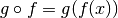
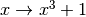
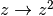
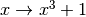
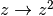
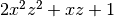

Compound Models¶
New in version 1.0.
As noted in the introduction to the modeling package, it is now possible to create new models just by
combining existing models using the arithmetic operators +, -, *,
/, and **, as well as by model composition using | and
concatenation (explained below) with &.
Some terminology¶
In discussing the compound model feature, it is useful to be clear about a few terms where there have been points of confusion:
The term “model” can refer either to a model class or a model instance.
- All models in
astropy.modeling, whether it represents somefunction, arotation, etc., are represented in the abstract by a model class–specifically a subclass ofModel–that encapsulates the routine for evaluating the model, a list of its required parameters, and other metadata about the model. - Per typical object-oriented parlance, a model instance is the object created when when calling a model class with some arguments–in most cases values for the model’s parameters.
A model class, by itself, cannot be used to perform any computation because most models, at least, have one or more parameters that must be specified before the model can be evaluated on some input data. However, we can still get some information about a model class from its representation. For example:
>>> from astropy.modeling.models import Gaussian1D >>> Gaussian1D <class 'astropy.modeling.functional_models.Gaussian1D'> Name: Gaussian1D Inputs: ('x',) Outputs: ('y',) Fittable parameters: ('amplitude', 'mean', 'stddev')
We can then create a model instance by passing in values for the three parameters:
>>> my_gaussian = Gaussian1D(amplitude=1.0, mean=0, stddev=0.2) >>> my_gaussian <Gaussian1D(amplitude=1.0, mean=0.0, stddev=0.2)>
We now have an instance of
Gaussian1Dwith all its parameters (and in principle other details like fit constraints) filled in so that we can perform calculations with it as though it were a function:>>> my_gaussian(0.2) 0.6065306597126334
In many cases this document just refers to “models”, where the class/instance distinction is either irrelevant or clear from context. But a distinction will be made where necessary.
- All models in
A compound model can be created by combining two or more existing models– be they model instances or classes, and can be models that come with Astropy, user defined models, or other compound models–using Python expressions consisting of one or more of the supported binary operators.
In some places the term composite model is used interchangeably with compound model. This can be seen in the cases of the now deprecated
SerialCompositeModelandSummedCompositeModel. However, this document uses the term composite model to refer only to the case of a compound model created from the functional composition of two or more models using the pipe operator|as explained below. This distinction is used consistently within this document, but it may be helpful to understand the distinction.
Creating compound models¶
As discussed in the introduction to compound models, the only way, currently, to create compound models is
to combine existing single models and/or compound models using expressions in
Python with the binary operators +, -, *, /, **, |,
and &, each of which is discussed in the following sections. The operands
used in these expressions may be model classes, or model instances. In
other words, any object for which either isinstance(obj, Model) or
issubclass(obj, Model) is True.
Compound model classes¶
We start by demonstrating how new compound model classes can be created by combining other classes. This is more advanced usage, but it’s useful to understand that this is what’s going on under the hood in the more basic usage of compound model instances.
When all models involved in the expression are classes, the result of the expression is, itself, a class (remember, classes in Python are themselves also objects just like strings and integers or model instances):
>>> TwoGaussians = Gaussian1D + Gaussian1D
>>> from astropy.modeling import Model
>>> isinstance(TwoGaussians, Model)
False
>>> issubclass(TwoGaussians, Model)
True
When we inspect the variable TwoGaussians by printing its representation at
the command prompt we can get some more information about it:
>>> TwoGaussians
<class '__main__.CompoundModel...'>
Name: CompoundModel...
Inputs: ('x',)
Outputs: ('y',)
Fittable parameters: ('amplitude_0', 'mean_0', 'stddev_0', 'amplitude_1', 'mean_1', 'stddev_1')
Expression: [0] + [1]
Components:
[0]: <class 'astropy.modeling.functional_models.Gaussian1D'>
Name: Gaussian1D
Inputs: ('x',)
Outputs: ('y',)
Fittable parameters: ('amplitude', 'mean', 'stddev')
[1]: <class 'astropy.modeling.functional_models.Gaussian1D'>
Name: Gaussian1D
Inputs: ('x',)
Outputs: ('y',)
Fittable parameters: ('amplitude', 'mean', 'stddev')
There are a number of things to point out here: This model class has six
fittable parameters. How parameters are handled is discussed further in the
section on Parameters. We also see that there is a
listing of the expression that was used to create this compound model, which
in this case is summarized as [0] + [1]. The [0] and [1] refer to
the first and second components of the model listed next (in this case both
components are the Gaussian1D class).
Each component of a compound model is a single, non-compound model. This is the case even when including an existing compound model in a new expression. The existing compound model is not treated as a single model–instead the expression represented by that compound model is extended. An expression involving two or more compound models results in a new expression that is the concatenation of all involved models’ expressions:
>>> FourGaussians = TwoGaussians + TwoGaussians
>>> FourGaussians
<class '__main__.CompoundModel...'>
Name: CompoundModel...
Inputs: ('x',)
Outputs: ('y',)
Fittable parameters: ('amplitude_0', 'mean_0', 'stddev_0', ..., 'amplitude_3', 'mean_3', 'stddev_3')
Expression: [0] + [1] + [2] + [3]
Components:
[0]: <class 'astropy.modeling.functional_models.Gaussian1D'>
Name: Gaussian1D
Inputs: ('x',)
Outputs: ('y',)
Fittable parameters: ('amplitude', 'mean', 'stddev')
...
[3]: <class 'astropy.modeling.functional_models.Gaussian1D'>
Name: Gaussian1D
Inputs: ('x',)
Outputs: ('y',)
Fittable parameters: ('amplitude', 'mean', 'stddev')
In a future version it may be possible to “freeze” a compound model, so that from the user’s perspective it is treated as a single model. However, as this is the default behavior it is good to be aware of.
Model names¶
In the last two examples another notable feature of the generated compound
model classes is that the class name, as displayed when printing the class at
the command prompt, is not “TwoGaussians”, “FourGaussians”, etc. Instead it is
a generated name consisting of “CompoundModel” followed by an essentially
arbitrary integer that is chosen simply so that every compound model has a
unique default name. This is a limitation at present, due to the limitation
that it is not generally possible in Python when an object is created by an
expression for it to “know” the name of the variable it will be assigned to, if
any. It may be possible in the future to work around this in limited cases,
but for now there are a couple workarounds for creating compound model classes
with friendlier names. The first is to use the
Model.rename class method on the result of
the model expression:
>>> TwoGaussians = (Gaussian1D + Gaussian1D).rename('TwoGaussians')
>>> TwoGaussians
<class '__main__.TwoGaussians'>
Name: TwoGaussians (CompoundModel...)
...
This actually takes the generated compound model and creates a light subclass
of it with the desired name. This does not impose any additional overhead. An
alternative syntax, which is equivalent to what
rename is doing, is to directly use the model
expression as the base class of a new class:
>>> class TwoGaussians(Gaussian1D + Gaussian1D):
... """A superposition of two Gaussians."""
...
>>> TwoGaussians
<class '__main__.TwoGaussians'>
Name: TwoGaussians (CompoundModel...)
...
Because the result of the expression Gaussian1D + Gaussian1D is a class,
it can be used directly in the standard class declaration syntax
class ClassName(Base): as the base. This syntax also has the advantage of
allowing a docstring to be assigned to the new class. In future versions it
may be possible to customize other aspects of compound model classes in this
way. Single model classes can also be given custom names by using
rename, and model instances can be given names as
well. This can be used to good effect, for example as shown in the section on
Indexing and slicing.
Compound models with model instances¶
So far we have seen how to create compound model classes from expressions involving other model classes. This is the most “generic” way to create new models from existing models. However, many may find it more useful most of the time, especially when providing an initial guess to a fitter, to create a new model from a combination of model instances with already defined parameter values. This can also be done and works mostly the same way:
>>> both_gaussians = Gaussian1D(1, 0, 0.2) + Gaussian1D(2.5, 0.5, 0.1)
>>> both_gaussians
<CompoundModel...(amplitude_0=1.0, mean_0=0.0, stddev_0=0.2, amplitude_1=2.5, mean_1=0.5, stddev_1=0.1)>
Unlike when a model was created from model classes, this expression does not directly return a new class; instead it creates a model instance that is ready to be used for evaluation:
>>> both_gaussians(0.2)
0.6343031510582392
This was found to be much more convenient and natural, in this case, than
returning a class. It is worth understanding that the way this works under the
hood is to create the compound class, and then immediately instantiate it with
the already known parameter values. We can see this by checking the type of
both_gaussians:
>>> type(both_gaussians)
<class '__main__.CompoundModel...'>
Name: CompoundModel...
Inputs: ('x',)
Outputs: ('y',)
Fittable parameters: ('amplitude_0', 'mean_0', 'stddev_0', 'amplitude_1', 'mean_1', 'stddev_1')
Expression: [0] + [1]
Components:
[0]: <Gaussian1D(amplitude=1.0, mean=0.0, stddev=0.2)>
[1]: <Gaussian1D(amplitude=2.5, mean=0.5, stddev=0.1)>
It is also possible, and sometimes useful, to make a compound model from a combination of classes and instances in the same expression:
>>> from astropy.modeling.models import Linear1D, Sine1D
>>> MyModel = Linear1D + Sine1D(amplitude=1, frequency=1, phase=0)
>>> MyModel
<class '__main__.CompoundModel...'>
Name: CompoundModel...
Inputs: ('x',)
Outputs: ('y',)
Fittable parameters: ('slope_0', 'intercept_0', 'amplitude_1', 'frequency_1', 'phase_1')
Expression: [0] + [1]
Components:
[0]: <class 'astropy.modeling.functional_models.Linear1D'>
Name: Linear1D
Inputs: ('x',)
Outputs: ('y',)
Fittable parameters: ('slope', 'intercept')
[1]: <Sine1D(amplitude=1.0, frequency=1.0, phase=0.0)>
In this case the result is always a class. However (and this is not
immediately obvious by the representation) the difference is that the
amplitude and frequency parameters for the
Sine1D part of the model are
“baked into” the class as default values for those parameters. So it is
possible to instantiate one of these models by specifying just the slope
and intercept parameters for the
Linear1D part of the model:
>>> my_model = MyModel(1, 0)
>>> my_model(0.25)
1.25
This does not prevent the other parameters from being overridden, however:
>>> my_model = MyModel(slope_0=1, intercept_0=0, frequency_1=2)
>>> my_model(0.125)
1.125
In fact, this is currently the only way to use a polynomial model in a compound model, because the design of
the polynomial models is currently such that they must be instantiated in order
to specify their polynomial degree. Because the polynomials are already
designed so that their coefficients all default to zero, this “limitation”
should not have any practical drawbacks.
Note
There is currently a caveat in the example of combining model classes and instances, which is that the parameter values of model instances are only treated as defaults if the expression is written in such a way that all model instances are to the right of all model classes. This limitation will be lifted in a later version–in particular, Python 3 offers a lot more flexibility with respect to how function arguments are handled.
Operators¶
Arithmetic operators¶
Compound models can be created from expressions that include any
number of the arithmetic operators +, -, *, /, and
**, which have the same meanings as they do for other numeric
objects in Python.
Note
In the case of division / always means floating point division–integer
division and the // operator is not supported for models).
As demonstrated in previous examples, for models that have a single output
the result of evaluating a model like A + B is to evaluate A and
B separately on the given input, and then return the sum of the outputs of
A and B. This requires that A and B take the same number of
inputs and both have a single output.
It is also possible to use arithmetic operators between models with multiple outputs. Again, the number of inputs must be the same between the models, as must be the number of outputs. In this case the operator is applied to the operators element-wise, similarly to how arithmetic operators work on two Numpy arrays.
Model composition¶
The sixth binary operator that can be used to create compound models is the
composition operator, also known as the “pipe” operator | (not to be
confused with the boolean “or” operator that this implements for Python numeric
objects). A model created with the composition operator like M = F | G,
when evaluated, is equivalent to evaluating .
Note
The fact that the | operator has the opposite sense as the functional
composition operator  is sometimes a point of confusion.
This is in part because there is no operator symbol supported in Python
that corresponds well to this. The
is sometimes a point of confusion.
This is in part because there is no operator symbol supported in Python
that corresponds well to this. The | operator should instead be read
like the pipe operator of UNIX shell syntax:
It chains together models by piping the output of the left-hand operand to
the input of the right-hand operand, forming a “pipeline” of models, or
transformations.
This has different requirements on the inputs/outputs of its operands than do the arithmetic operators. For composition all that is required is that the left-hand model has the same number of outputs as the right-hand model has inputs.
For simple functional models this is exactly the same as functional composition, except for the aforementioned caveat about ordering. For example, to create the following compound model:
import numpy as np
from astropy.modeling.models import RedshiftScaleFactor, Gaussian1D
class RedshiftedGaussian(RedshiftScaleFactor | Gaussian1D(1, 0.75, 0.1)):
"""Evaluates a Gaussian with optional redshift applied to the input."""
x = np.linspace(0, 1.2, 100)
g0 = RedshiftedGaussian(z_0=0)
plt.figure(figsize=(8, 5))
plt.plot(x, g0(x), 'g--', label='$z=0$')
for z in (0.2, 0.4, 0.6):
g = RedshiftedGaussian(z_0=z)
plt.plot(x, g(x), color=plt.cm.OrRd(z),
label='$z={0}$'.format(z))
plt.xlabel('Energy')
plt.ylabel('Flux')
plt.legend()
(Source code, png, hires.png, pdf)
{kind=link}
{kind=link}
If you wish to perform redshifting in the wavelength space instead of energy, and would also like to conserve flux, here is another way to do it using model instances:
import numpy as np
from astropy.modeling.models import RedshiftScaleFactor, Gaussian1D, Scale
x = np.linspace(1000, 5000, 1000)
g0 = Gaussian1D(1, 2000, 200) # No redshift is same as redshift with z=0
plt.figure(figsize=(8, 5))
plt.plot(x, g0(x), 'g--', label='$z=0$')
for z in (0.2, 0.4, 0.6):
rs = RedshiftScaleFactor(z).inverse # Redshift in wavelength space
sc = Scale(1. / (1 + z)) # Rescale the flux to conserve energy
g = rs | g0 | sc
plt.plot(x, g(x), color=plt.cm.OrRd(z),
label='$z={0}$'.format(z))
plt.xlabel('Wavelength')
plt.ylabel('Flux')
plt.legend()
(Source code, png, hires.png, pdf)
{kind=link}
{kind=link}
When working with models with multiple inputs and outputs the same idea applies. If each input is thought of as a coordinate axis, then this defines a pipeline of transformations for the coordinates on each axis (though it does not necessarily guarantee that these transformations are separable). For example:
import numpy as np
from astropy.modeling.models import Rotation2D, Gaussian2D
class RotatedGaussian(Rotation2D | Gaussian2D(1, 0, 0, 0.1, 0.3)):
"""A Gaussian2D composed with a coordinate rotation."""
x, y = np.mgrid[-1:1:0.01, -1:1:0.01]
plt.figure(figsize=(8, 2.5))
for idx, theta in enumerate((0, 45, 90)):
g = RotatedGaussian(theta)
plt.subplot(1, 3, idx + 1)
plt.imshow(g(x, y), origin='lower')
plt.xticks([])
plt.yticks([])
plt.title('Rotated $ {0}^\circ $'.format(theta))
(Source code, png, hires.png, pdf)
{kind=link}
{kind=link}
Note
The above example is a bit contrived in that
Gaussian2D already supports an
optional rotation parameter. However, this demonstrates how coordinate
rotation could be added to arbitrary models.
Normally it is not possible to compose, say, a model with two outputs and a function of only one input:
>>> from astropy.modeling.models import Rotation2D
>>> Rotation2D | Gaussian1D
Traceback (most recent call last):
...
ModelDefinitionError: Unsupported operands for |: Rotation2D (n_inputs=2, n_outputs=2) and Gaussian1D (n_inputs=1, n_outputs=1); n_outputs for the left-hand model must match n_inputs for the right-hand model.
However, as we will see in the next section, Model concatenation, provides a means of creating models that apply transformations to only some of the outputs from a model, especially when used in concert with mappings.
Model concatenation¶
The concatenation operator &, sometimes also referred to as a “join”,
combines two models into a single, fully separable transformation. That is, it
makes a new model that takes the inputs to the left-hand model, concatenated
with the inputs to the right-hand model, and returns a tuple consisting of the
two models’ outputs concatenated together, without mixing in any way. In other
words, it simply evaluates the two models in parallel–it can be thought of as
something like a tuple of models.
For example, given two coordinate axes, we can scale each coordinate
by a different factor by concatenating two
Scale models.
>>> from astropy.modeling.models import Scale
>>> separate_scales = Scale(factor=1.2) & Scale(factor=3.4)
>>> separate_scales(1, 2)
(1.2, 6.8)
We can also combine concatenation with composition to build chains of transformations that use both “1D” and “2D” models on two (or more) coordinate axes:
>>> scale_and_rotate = ((Scale(factor=1.2) & Scale(factor=3.4)) |
... Rotation2D(90))
>>> scale_and_rotate.n_inputs
2
>>> scale_and_rotate.n_outputs
2
>>> scale_and_rotate(1, 2)
(-6.8, 1.2)
This is of course equivalent to an
AffineTransformation2D with the appropriate
transformation matrix:
>>> from numpy import allclose
>>> from astropy.modeling.models import AffineTransformation2D
>>> affine = AffineTransformation2D(matrix=[[0, -3.4], [1.2, 0]])
>>> # May be small numerical differences due to different implementations
>>> allclose(scale_and_rotate(1, 2), affine(1, 2))
True
Indexing and slicing¶
As seen in some of the previous examples in this document, when creating a compound model each component of the model is assigned an integer index starting from zero. These indices are assigned simply by reading the expression that defined the model, from left to right, regardless of the order of operations. For example:
>>> from astropy.modeling.models import Const1D
>>> A = Const1D.rename('A')
>>> B = Const1D.rename('B')
>>> C = Const1D.rename('C')
>>> M = A + B * C
>>> M
<class '__main__.CompoundModel...'>
Name: CompoundModel...
...
Expression: [0] + [1] * [2]
Components:
[0]: <class '__main__.A'>
Name: A (Const1D)
...
[1]: <class '__main__.B'>
Name: B (Const1D)
...
[2]: <class '__main__.C'>
Name: C (Const1D)
...
In this example the expression is evaluated (B * C) + A–that is, the
multiplication is evaluated before the addition per usual arithmetic rules.
However, the components of this model are simply read off left to right from
the expression A + B * C, with A -> 0, B -> 1, C -> 2. If we
had instead defined M = C * B + A then the indices would be reversed
(though the expression is mathematically equivalent). This convention is
chosen for simplicity–given the list of components it is not necessary to
jump around when mentally mapping them to the expression.
We can pull out each individual component of the compound model M by using
indexing notation on it. Following from the above example, M[1] should
return the model B:
>>> M[1]
<class '__main__.B'>
Name: B (Const1D)
Inputs: ('x',)
Outputs: ('y',)
Fittable parameters: ('amplitude',)
We can also take a slice of the compound model. This returns a new compound
model that evaluates the subexpression involving the models selected by the
slice. This follows the same semantics as slicing a list or array in Python.
The start point is inclusive and the end point is exclusive. So a slice like
M[1:3] (or just M[1:]) selects models B and C (and all
operators between them). So the resulting model evaluates just the
subexpression B * C:
>>> M[1:]
<class 'astropy.modeling.utils.CompoundModel...'>
Name: CompoundModel...
Inputs: ('x',)
Outputs: ('y',)
Fittable parameters: ('amplitude_1', 'amplitude_2')
Expression: [0] * [1]
Components:
[0]: <class '__main__.B'>
Name: B (Const1D)
...
[1]: <class '__main__.C'>
Name: C (Const1D)
...
The new compound model for the subexpression can be instantiated and evaluated like any other:
>>> m = M[1:](2, 3)
>>> m
<CompoundModel...(amplitude_1=2.0, amplitude_2=3.0)>
>>> m(0)
6.0
Although the model M was composed entirely of Const1D models in this
example, it was useful to give each component a unique name (A, B,
C) in order to differentiate between them. This can also be used for
indexing and slicing:
>>> M['B']
<class '__main__.B'>
Name: B (Const1D)
Inputs: ('x',)
Outputs: ('y',)
Fittable parameters: ('amplitude',)
In this case M['B'] is equivalent to M[1]. But by using the name we do
not have to worry about what index that component is in (this becomes
especially useful when combining multiple compound models). A current
limitation, however, is that each component of a compound model must have a
unique name–if some components have duplicate names then they can only be
accessed by their integer index. This may improve in a future release.
Slicing also works with names. When using names the start and end points are both inclusive:
>>> M['B':'C']
<class 'astropy.modeling.utils.CompoundModel...'>
...
Expression: [0] * [1]
Components:
[0]: <class '__main__.B'>
Name: B (Const1D)
...
[1]: <class '__main__.C'>
Name: C (Const1D)
...
So in this case M['B':'C'] is equivalent to M[1:3].
All of the above applies equally well to compound models composed of model
instances. Individual model instances can be given a name by passing in the
name= argument when instantiating them. These names are used in the same was
as class names were in the class-based examples:
>>> a = Const1D(amplitude=1, name='A')
>>> b = Const1D(amplitude=2, name='B')
>>> c = Const1D(amplitude=3, name='C')
>>> m = a + b * c
Because this model is composed entirely of constants it doesn’t matter what input we pass in, so 0 is used without loss of generality:
>>> m(0)
7.0
>>> m[1:](0) # b * c
6.0
>>> m['A':'B'](0) # a + b
3.0
>>> m['B':'C'](0) # b * c, again
6.0
Parameters¶
A question that frequently comes up when first encountering compound models is how exactly all the parameters are dealt with. By now we’ve seen a few examples that give some hints, but a more detailed explanation is in order. This is also one of the biggest areas for possible improvements–the current behavior is meant to be practical, but is not ideal. (Some possible improvements include being able to rename parameters, and providing a means of narrowing down the number of parameters in a compound model.)
As explained in the general documentation for model parameters, every model has an attribute called
param_names that contains a tuple of all the model’s
adjustable parameters. These names are given in a canonical order that also
corresponds to the order in which the parameters should be specified when
instantiating the model.
The simple scheme used currently for naming parameters in a compound model is
this: The param_names from each component model are concatenated with each
other in order from left to right as explained in the section on
Indexing and slicing. However, each parameter name is appended with
_<#>, where <#> is the index of the component model that parameter
belongs to. For example:
>>> Gaussian1D.param_names
('amplitude', 'mean', 'stddev')
>>> (Gaussian1D + Gaussian1D).param_names
('amplitude_0', 'mean_0', 'stddev_0', 'amplitude_1', 'mean_1', 'stddev_1')
For consistency’s sake, this scheme is followed even if not all of the components have overlapping parameter names:
>>> from astropy.modeling.models import RedshiftScaleFactor
>>> (RedshiftScaleFactor | (Gaussian1D + Gaussian1D)).param_names
('z_0', 'amplitude_1', 'mean_1', 'stddev_1', 'amplitude_2', 'mean_2',
'stddev_2')
On some level a scheme like this is necessary in order for the compound model to maintain some consistency with other models with respect to the interface to its parameters. However, if one gets lost it is also possible to take advantage of indexing to make things easier. When returning a single component from a compound model the parameters associated with that component are accessible through their original names, but are still tied back to the compound model:
>>> a = Gaussian1D(1, 0, 0.2, name='A')
>>> b = Gaussian1D(2.5, 0.5, 0.1, name='B')
>>> m.amplitude_0
Parameter('amplitude_0', value=1.0)
is equivalent to:
>>> m['A'].amplitude
Parameter('amplitude', value=1.0)
You can think of these both as different “views” of the same parameter. Updating one updates the other:
>>> m.amplitude_0 = 42
>>> m['A'].amplitude
Parameter('amplitude', value=42.0)
>>> m['A'].amplitude = 99
>>> m.amplitude_0
Parameter('amplitude_0', value=99.0)
Note, however, that the original
Gaussian1D instance a has not been
updated:
>>> a.amplitude
Parameter('amplitude', value=1.0)
This is because currently, when a compound model is created, copies are made of the original models.
Advanced mappings¶
We have seen in some previous examples how models can be chained together to
form a “pipeline” of transformations by using model composition and concatenation. To aid the creation of more complex chains of
transformations (for example for a WCS transformation) a new class of
“mapping” models is provided.
Mapping models do not (currently) take any parameters, nor do they perform any
numeric operation. They are for use solely with the concatenation (&) and composition (|) operators, and can be used to control how
the inputs and outputs of models are ordered, and how outputs from one model
are mapped to inputs of another model in a composition.
Currently there are only two mapping models:
Identity, and (the somewhat generically named)
Mapping.
The Identity mapping simply passes one or more
inputs through, unchanged. It must be instantiated with an integer specifying
the number of inputs/outputs it accepts. This can be used to trivially expand
the “dimensionality” of a model in terms of the number of inputs it accepts.
In the section on concatenation we saw
an example like:
>>> m = (Scale(1.2) & Scale(3.4)) | Rotation2D(90)
where two coordinate inputs are scaled individually and then rotated into each
other. However, say we wanted to scale only one of those coordinates. It
would be fine to simply use Scale(1) for one them, or any other model that
is effectively a no-op. But that also adds unnecessary computational overhead,
so we might as well simply specify that that coordinate is not to be scaled or
transformed in any way. This is a good use case for
Identity:
>>> from astropy.modeling.models import Identity
>>> m = Scale(1.2) & Identity(1)
>>> m(1, 2)
(1.2, 2.0)
This scales the first input, and passes the second one through unchanged. We can use this to build up more complicated steps in a many-axis WCS transformation. If for example we had 3 axes and only wanted to scale the first one:
>>> m = Scale(1.2) & Identity(2)
>>> m(1, 2, 3)
(1.2, 2.0, 3.0)
(Naturally, the last example could also be written out Scale(1.2) &
Identity(1) & Identity(1).)
The Mapping model is similar in that it does not
modify any of its inputs. However, it is more general in that it allows inputs
to be duplicated, reordered, or even dropped outright. It is instantiated with
a single argument: a tuple, the number of items of which correspond to the
number of outputs the Mapping should produce. A
1-tuple means that whatever inputs come in to the
Mapping, only one will be output. And so on for
2-tuple or higher (though the length of the tuple cannot be greater than the
number of inputs–it will not pull values out of thin air). The elements of
this mapping are integers corresponding to the indices of the inputs. For
example, a mapping of Mapping((0,)) is equivalent to Identity(1)–it
simply takes the first (0-th) input and returns it:
>>> from astropy.modeling.models import Mapping
>>> m = Mapping((0,))
>>> m(1.0)
1.0
Likewise Mapping((0, 1)) is equivalent to Identity(2), and so on.
However, Mapping also allows outputs to be
reordered arbitrarily:
>>> m = Mapping((1, 0))
>>> m(1.0, 2.0)
(2.0, 1.0)
>>> m = Mapping((1, 0, 2))
>>> m(1.0, 2.0, 3.0)
(2.0, 1.0, 3.0)
Outputs may also be dropped:
>>> m = Mapping((1,))
>>> m(1.0, 2.0)
2.0
>>> m = Mapping((0, 2))
>>> m(1.0, 2.0, 3.0)
(1.0, 3.0)
Or duplicated:
>>> m = Mapping((0, 0))
>>> m(1.0)
(1.0, 1.0)
>>> m = Mapping((0, 1, 1, 2))
>>> m(1.0, 2.0, 3.0)
(1.0, 2.0, 2.0, 3.0)
A complicated example that performs multiple transformations, some separable, some not, on three coordinate axes might look something like:
>>> from astropy.modeling.models import Polynomial1D as Poly1D
>>> from astropy.modeling.models import Polynomial2D as Poly2D
>>> m = ((Poly1D(3, c0=1, c3=1) & Identity(1) & Poly1D(2, c2=1)) |
... Mapping((0, 2, 1)) |
... (Poly2D(4, c0_0=1, c1_1=1, c2_2=2) & Gaussian1D(1, 0, 4)))
...
>>> m(2, 3, 4)
(41617.0, 0.7548396019890073)
This expression takes three inputs:  ,
,  , and
, and  . It
first takes  and .
Then it remaps the axes so that and are passed in to the
. It
first takes  and .
Then it remaps the axes so that and are passed in to the
Polynomial2D to evaluate
, while simultaneously evaluating a Gaussian on
. The end result is a reduction down to two coordinates. You can
confirm for yourself that the result is correct.
This opens up the possibility of essentially arbitrarily complex transformation graphs. Currently the tools do not exist to make it easy to navigate and reason about highly complex compound models that use these mappings, but that is a possible enhancement for future versions.